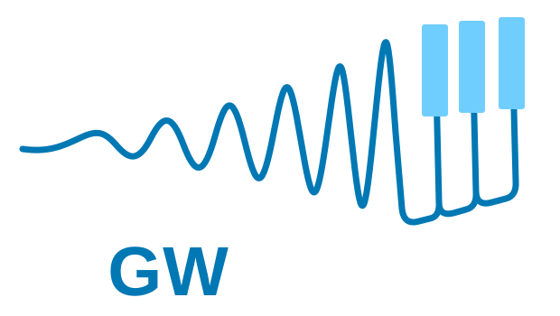

Waiting for the live display…
Reset played notes
SCIENTIFIC
the full model waveform
MUSICAL
chirp with a piano note
▶ Play every detection
0.2 s apart, oldest first
Timeline
30 s, real spacing
■ Stop